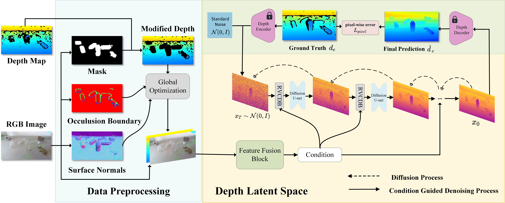

We present TransDiff, a diffusion-based method for depth estimation of transparent objects. By leveraging RGB cues like edges and normals, our model gradually refines depth through a denoising process. Despite the challenges of reflection and refraction, TransDiff achieves accurate, material-agnostic depth maps and outperforms existing methods on both synthetic and real-world datasets.
The gallery below presents sample images from the ClearGrasp and TransCG datasets. Use the slider and gestures to explore the depth estimation results.
Given RGB-D image, TransDiff first predicts the mask, the boundary and the surface normal of transparent objects. Global optimization will then generate a depth map of the initial refinement, combined with an RGB image, and conduct feature fusion to integrate the features from both the RGB image and the initially refined depth map to create a combined feature representation. The Refined Visual Conditioned Denoising Block (RVCDB) iteratively refines the depth map through a denoising process guided by the fused visual conditions. The denoising process incorporates both the diffusion process and the guidance provided by the refined visual conditions, progressively improving the depth map's quality.

@article{wang2025transdiff,
title={TransDiff: Diffusion-Based Method for Manipulating Transparent Objects Using a Single RGB-D Image},
author={Wang, Haoxiao and Zhou, Kaichen and Gu, Binrui and Feng, Zhiyuan and Wang, Weijie and Sun, Peilin and Xiao, Yicheng and Zhang, Jianhua and Dong, Hao},
journal={arXiv preprint arXiv:2503.12779},
year={2025}
}